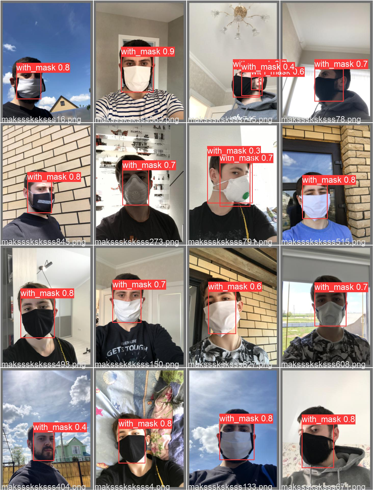
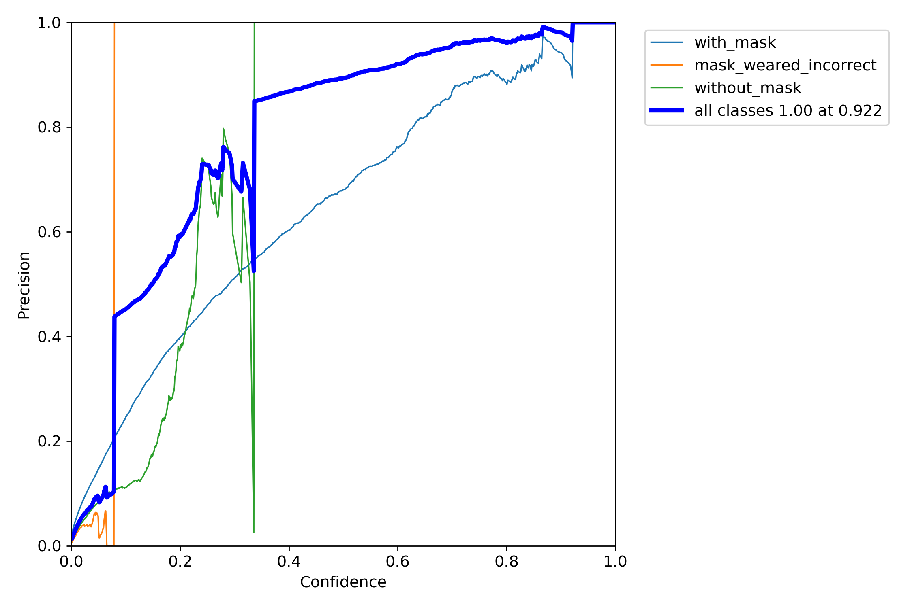
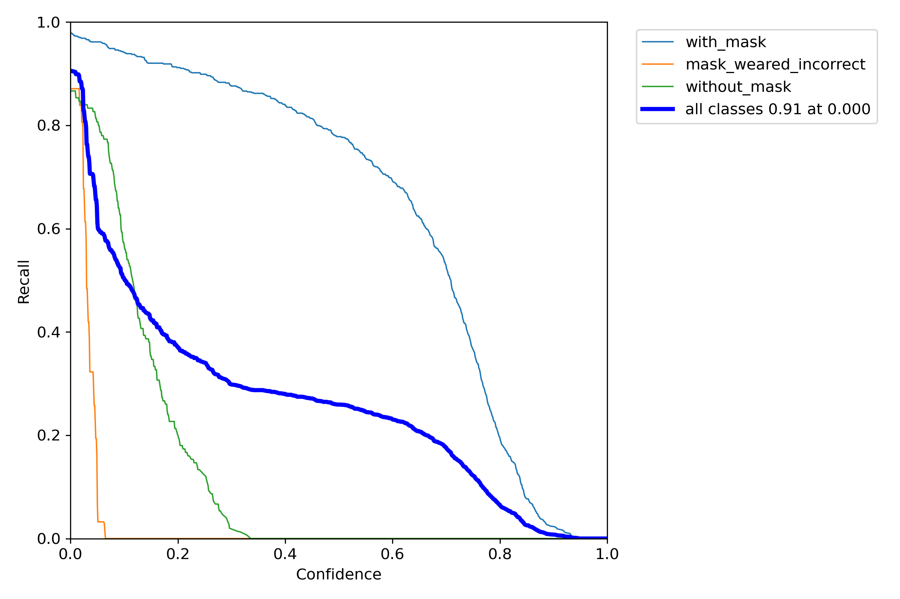
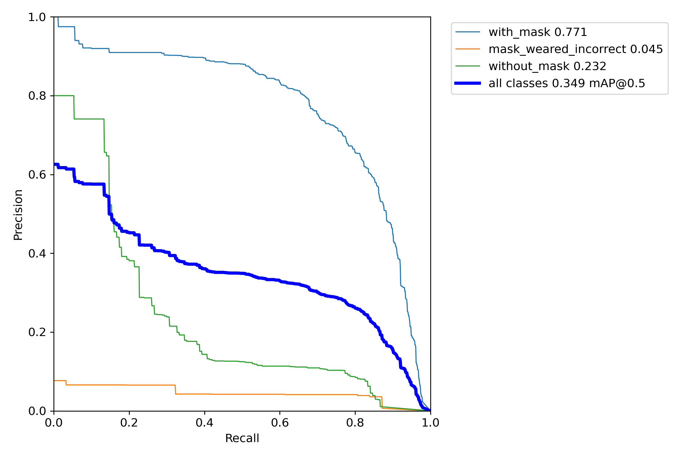
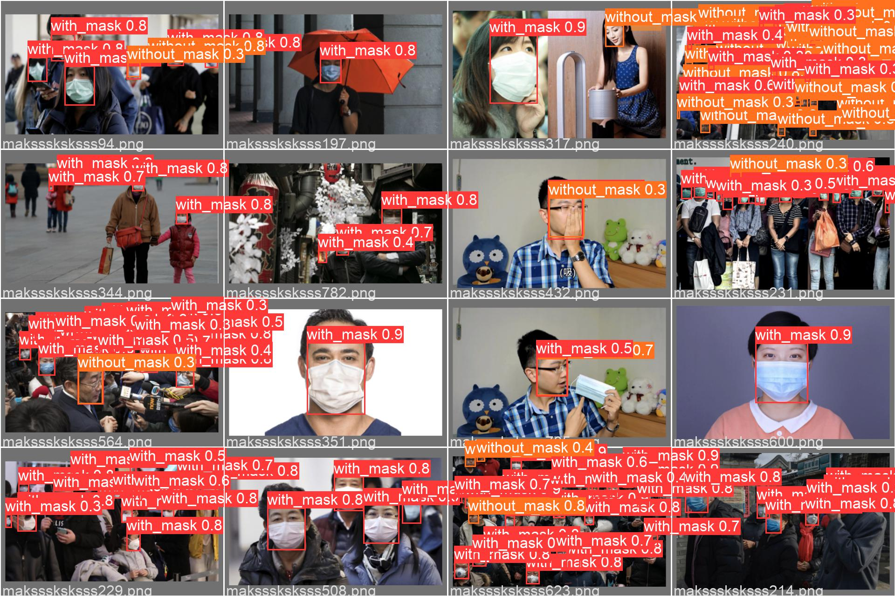
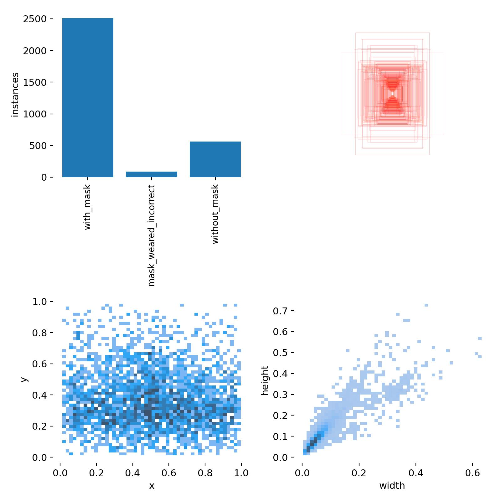
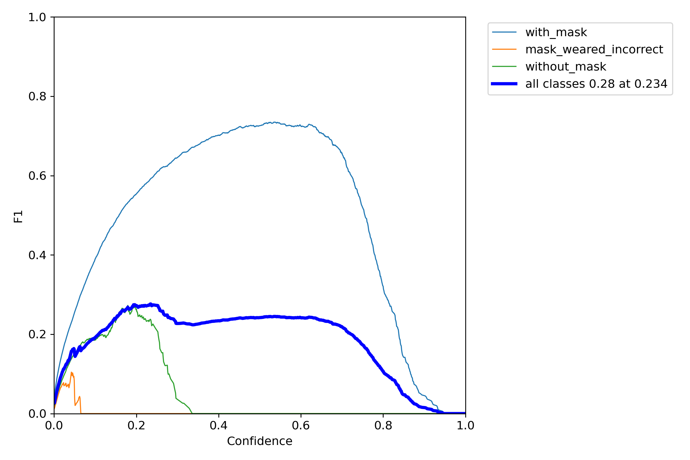

模型训练
内容
#!python train.py --img 640 --batch 16 --epochs 5 --data coco128.yaml --weights yolov5s.pt
模型训练¶
注解
可以使用 Weights & Biases 可视化训练过程。
import sys
from pathlib import Path
ROOT = Path('yolov5/') # YOLOv5 根目录
if str(ROOT) not in sys.path:
sys.path.append(ROOT.as_posix())
import torch
model_name = 'yolov5s'
image_size = 640
batch_size = 32
epochs = 10
device = 0 if torch.cuda.is_available() else 'cpu'
saved_model_name = 'best.pt'
# for test
confidence_threshold = 0.25 # Threshold of object inference
iou_threshold = 0.45 # Threshold of remove overlapping boxes
device
0
pwd = !pwd # ['/kaggle/working']
pwd = pwd[0] + '/'
yolo_path = pwd + 'yolov5/'
!python yolov5/train.py --weights yolov5s.pt \
--cfg yolov5/models/yolov5s.yaml --data datasets/face_mask.yaml \
--hyp yolov5/data/hyps/hyp.scratch.yaml --epochs 10 --batch-size 32 \
--img-size 640 --device 0
train: weights=yolov5s.pt, cfg=yolov5/models/yolov5s.yaml, data=datasets/face_mask.yaml, hyp=yolov5/data/hyps/hyp.scratch.yaml, epochs=10, batch_size=32, imgsz=640, rect=False, resume=False, nosave=False, noval=False, noautoanchor=False, evolve=None, bucket=, cache=None, image_weights=False, device=0, multi_scale=False, single_cls=False, optimizer=SGD, sync_bn=False, workers=8, project=yolov5/runs/train, name=exp, exist_ok=False, quad=False, linear_lr=False, label_smoothing=0.0, patience=100, freeze=[0], save_period=-1, local_rank=-1, entity=None, upload_dataset=False, bbox_interval=-1, artifact_alias=latest
github: up to date with https://github.com.cnpmjs.org/ultralytics/yolov5 ✅
YOLOv5 🚀 v6.0-192-g436ffc4 torch 1.10.1 CUDA:0 (NVIDIA GeForce RTX 2080 Ti, 11017MiB)
hyperparameters: lr0=0.01, lrf=0.1, momentum=0.937, weight_decay=0.0005, warmup_epochs=3.0, warmup_momentum=0.8, warmup_bias_lr=0.1, box=0.05, cls=0.5, cls_pw=1.0, obj=1.0, obj_pw=1.0, iou_t=0.2, anchor_t=4.0, fl_gamma=0.0, hsv_h=0.015, hsv_s=0.7, hsv_v=0.4, degrees=0.0, translate=0.1, scale=0.5, shear=0.0, perspective=0.0, flipud=0.0, fliplr=0.5, mosaic=1.0, mixup=0.0, copy_paste=0.0
Weights & Biases: run 'pip install wandb' to automatically track and visualize YOLOv5 🚀 runs (RECOMMENDED)
TensorBoard: Start with 'tensorboard --logdir yolov5/runs/train', view at http://localhost:6006/
Overriding model.yaml nc=80 with nc=3
from n params module arguments
0 -1 1 3520 models.common.Conv [3, 32, 6, 2, 2]
1 -1 1 18560 models.common.Conv [32, 64, 3, 2]
2 -1 1 18816 models.common.C3 [64, 64, 1]
3 -1 1 73984 models.common.Conv [64, 128, 3, 2]
4 -1 2 115712 models.common.C3 [128, 128, 2]
5 -1 1 295424 models.common.Conv [128, 256, 3, 2]
6 -1 3 625152 models.common.C3 [256, 256, 3]
7 -1 1 1180672 models.common.Conv [256, 512, 3, 2]
8 -1 1 1182720 models.common.C3 [512, 512, 1]
9 -1 1 656896 models.common.SPPF [512, 512, 5]
10 -1 1 131584 models.common.Conv [512, 256, 1, 1]
11 -1 1 0 torch.nn.modules.upsampling.Upsample [None, 2, 'nearest']
12 [-1, 6] 1 0 models.common.Concat [1]
13 -1 1 361984 models.common.C3 [512, 256, 1, False]
14 -1 1 33024 models.common.Conv [256, 128, 1, 1]
15 -1 1 0 torch.nn.modules.upsampling.Upsample [None, 2, 'nearest']
16 [-1, 4] 1 0 models.common.Concat [1]
17 -1 1 90880 models.common.C3 [256, 128, 1, False]
18 -1 1 147712 models.common.Conv [128, 128, 3, 2]
19 [-1, 14] 1 0 models.common.Concat [1]
20 -1 1 296448 models.common.C3 [256, 256, 1, False]
21 -1 1 590336 models.common.Conv [256, 256, 3, 2]
22 [-1, 10] 1 0 models.common.Concat [1]
23 -1 1 1182720 models.common.C3 [512, 512, 1, False]
24 [17, 20, 23] 1 21576 models.yolo.Detect [3, [[10, 13, 16, 30, 33, 23], [30, 61, 62, 45, 59, 119], [116, 90, 156, 198, 373, 326]], [128, 256, 512]]
Model Summary: 270 layers, 7027720 parameters, 7027720 gradients, 15.9 GFLOPs
Transferred 342/349 items from yolov5s.pt
Scaled weight_decay = 0.0005
optimizer: SGD with parameter groups 57 weight, 60 weight (no decay), 60 bias
train: Scanning '/home/znjs/xinet/ai/pytorch-book/docs/yolo/face-mask/datasets/l
val: Scanning '/home/znjs/xinet/ai/pytorch-book/docs/yolo/face-mask/datasets/lab
Plotting labels to yolov5/runs/train/exp2/labels.jpg...
AutoAnchor: 5.62 anchors/target, 0.999 Best Possible Recall (BPR). Current anchors are a good fit to dataset ✅
Image sizes 640 train, 640 val
Using 8 dataloader workers
Logging results to yolov5/runs/train/exp2
Starting training for 10 epochs...
Epoch gpu_mem box obj cls labels img_size
0/9 7G 0.1158 0.05063 0.03604 62 640: 100%|███
Class Images Labels P R mAP@.5 mAP@
all 166 884 0.00245 0.0322 0.00125 0.000251
Epoch gpu_mem box obj cls labels img_size
1/9 9.22G 0.1015 0.06092 0.02805 84 640: 100%|███
Class Images Labels P R mAP@.5 mAP@
all 166 884 0.0244 0.0465 0.00962 0.00177
Epoch gpu_mem box obj cls labels img_size
2/9 9.22G 0.08742 0.06462 0.02308 94 640: 100%|███
Class Images Labels P R mAP@.5 mAP@
all 166 884 0.783 0.0844 0.0789 0.0196
Epoch gpu_mem box obj cls labels img_size
3/9 9.22G 0.07709 0.05629 0.02034 121 640: 100%|███
Class Images Labels P R mAP@.5 mAP@
all 166 884 0.815 0.129 0.128 0.0339
Epoch gpu_mem box obj cls labels img_size
4/9 9.22G 0.06944 0.04896 0.01917 44 640: 100%|███
Class Images Labels P R mAP@.5 mAP@
all 166 884 0.854 0.16 0.191 0.0569
Epoch gpu_mem box obj cls labels img_size
5/9 9.22G 0.06292 0.04433 0.01906 63 640: 100%|███
Class Images Labels P R mAP@.5 mAP@
all 166 884 0.853 0.19 0.217 0.0686
Epoch gpu_mem box obj cls labels img_size
6/9 9.22G 0.05923 0.04341 0.01844 71 640: 100%|███
Class Images Labels P R mAP@.5 mAP@
all 166 884 0.886 0.188 0.247 0.0874
Epoch gpu_mem box obj cls labels img_size
7/9 9.22G 0.05522 0.04333 0.01853 124 640: 100%|███
Class Images Labels P R mAP@.5 mAP@
all 166 884 0.876 0.249 0.292 0.11
Epoch gpu_mem box obj cls labels img_size
8/9 9.22G 0.05052 0.04093 0.01832 121 640: 100%|███
Class Images Labels P R mAP@.5 mAP@
all 166 884 0.656 0.349 0.339 0.14
Epoch gpu_mem box obj cls labels img_size
9/9 9.22G 0.04766 0.04189 0.01874 130 640: 100%|███
Class Images Labels P R mAP@.5 mAP@
all 166 884 0.7 0.349 0.35 0.151
10 epochs completed in 0.032 hours.
Optimizer stripped from yolov5/runs/train/exp2/weights/last.pt, 14.4MB
Optimizer stripped from yolov5/runs/train/exp2/weights/best.pt, 14.4MB
Validating yolov5/runs/train/exp2/weights/best.pt...
Fusing layers...
Model Summary: 213 layers, 7018216 parameters, 0 gradients, 15.8 GFLOPs
Class Images Labels P R mAP@.5 mAP@
all 166 884 0.696 0.349 0.349 0.15
with_mask 166 703 0.445 0.9 0.772 0.345
mask_weared_incorrect 166 31 1 0 0.0476 0.0222
without_mask 166 150 0.645 0.147 0.227 0.0839
Results saved to yolov5/runs/train/exp2
!mv yolov5/runs/train/exp2/weights/ submission/
可视化¶
from IPython.display import Image
Image('yolov5/runs/train/exp/val_batch2_pred.jpg')

Image('yolov5/runs/train/exp/P_curve.png')

Image('yolov5/runs/train/exp/R_curve.png')

Image('yolov5/runs/train/exp/PR_curve.png')

Image('yolov5/runs/train/exp/labels_correlogram.jpg')

Image('yolov5/runs/train/exp/labels.jpg')

Image('yolov5/runs/train/exp/F1_curve.png')
